Meeting Minute #8
Date: 22 June 2024
Time: 4pm to 5pm
Location: Physical, after class meeting.
Attendees: Arya Siahaan, Seng Jing Yi, Thet Myat Noe
Agenda:
- Discussion on existing Shiny R plots
- Discussion on areas of abnormalities
- Discussion on final deliverables (Shiny Plot, User Guide, Poster)
Meeting Notes:
Discussion on the functionality and areas for improvement for the r Shiny Plots:
- Shiny Plot 1: Interactive Map of Oceanus
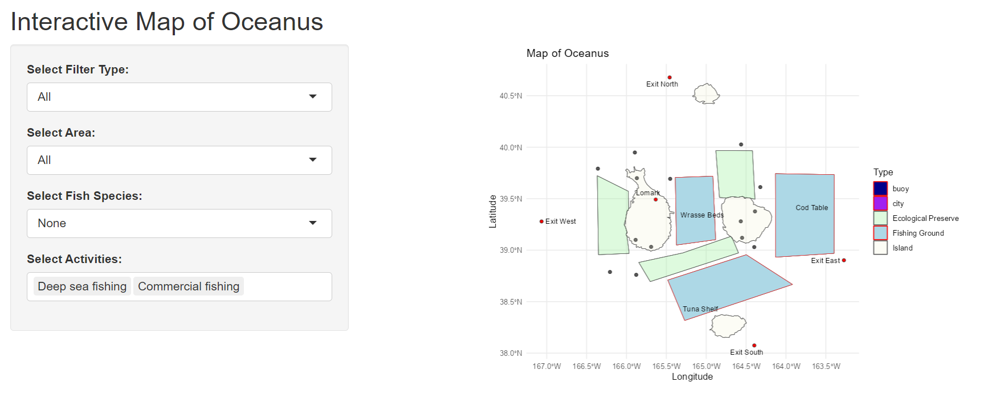
Purpose: Help users understand the location in relation to each other on a map.
- Allows users to select type of area that they are interested in (e.g., Fishing Ground).
- Allows users to select type of fish species they are interested in to see location of origin.
- Allows users to select activities that they are interested in to see the authorized areas to conduct these activities.
Exclude this plot from the final dashboard as although it provides contextual information, the guide on relative proximity of areas will be more meaningful when including vessel trajectory or dwell time for vessels.
To highlight where certain fish species are found in certain location, this can be done with a simple matrix to map the possible fish species (rows) to location (columns), focusing on fishing grounds and ecological preserves.
- Shiny Plot 2: Quantity of cargoes received per month
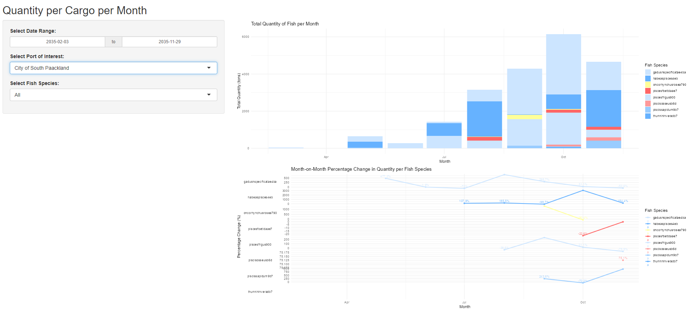
Purpose: Help users understand the quantity of cargo caught per month for the various species.
- Allows users to zoom into their “Port of Interest”
- Trend line of month on month change to identify the pattern (increase/ decrease)
- Color of “Salmon” to be shifted to a darker yellow for greater visibility
- Include mapping of possible vessels that delivered these cargo & association with the companies that delivered these cargo.
- Introduce trend line of “Median” across the year to show the relative catch amount difference for the respective months.
- Calculation for trend line below should not be “Percentage Change” and instead should be based on absolute amount in the form of Sparklines, to highlight the min and max values.
- Shiny Plot 3: Network Graph of Vessel ID to Cargo ID mapping
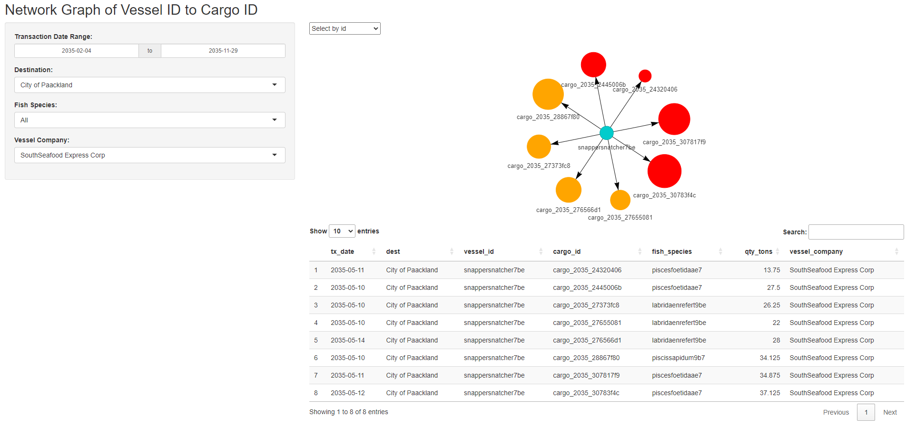
Purpose: Helps users to identify the cargo associated with the vessel of interest.
- Allows users to filter to identify the cargo mapping and vessel mapping per company.
- Allows user to see the summary of cargo and vessels mapped for each port.
- Size of the nodes for cargo is dependent on the cargo quantity in tons.
- Color of the cargo node reflects if the fish species caught is legal or illegal. (Red: Illegal, Orange: Legal).
- Include reference on what is the selected fish species for user’s readability.
- Include details on which port are these cargo delivered to and which months these cargo are delivered on a summary plot.
- Include dotted line where the match between vessel and cargo is poor (e.g., >7 days difference between vessel arrival date and cargo transaction date)
- Shiny Plot 4: Vessel dwell time & relative dwell time to other vessels
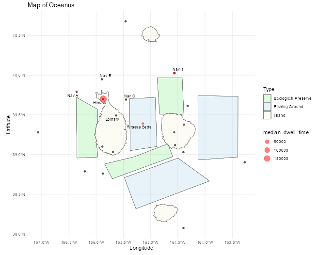
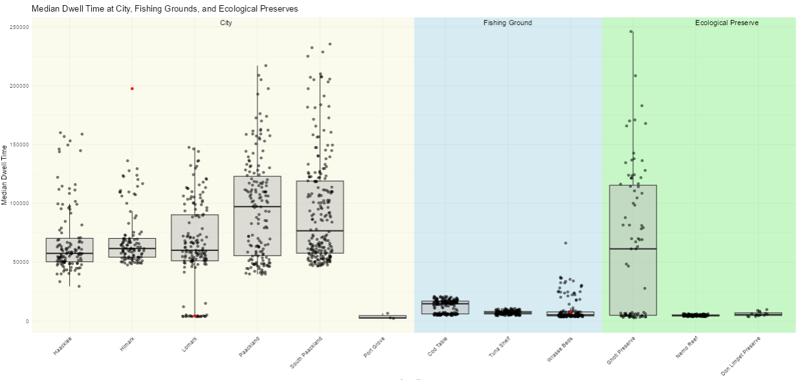
Purpose: Helps users have a quick view of vessel’s dwell time at various locations (on Oceanus geographical map) and in relation to other vessels.
- Allows users to filter based on interested time period to compare dwell across selected periods (e.g., before SSEC was caught, after SSEC was caught).
- Colors on boxplot background allows users to quickly identify the type of geographical region in relation to Oceanus map. (e.g., Beige for cities, light blue for fishing grounds and light green for ecological preserves).
- Make box plot interactive with
plotlysuch that when hovering on the specific point, users are able to identify the underlying vessel associated with it. - Also, to additional details (e.g., Vessel Company, Dwell Time) can be added to provide context on the vessel of interest.
- To zoom in to key areas of interest, namely fishing grounds and ecological preserve, the other non-critical areas such as “Cities, Navigation Buoy, Deep Sea fishing buoys” should be excluded to minimise distraction.
- Shiny Plot 5: Interactive Calendar Heatmap
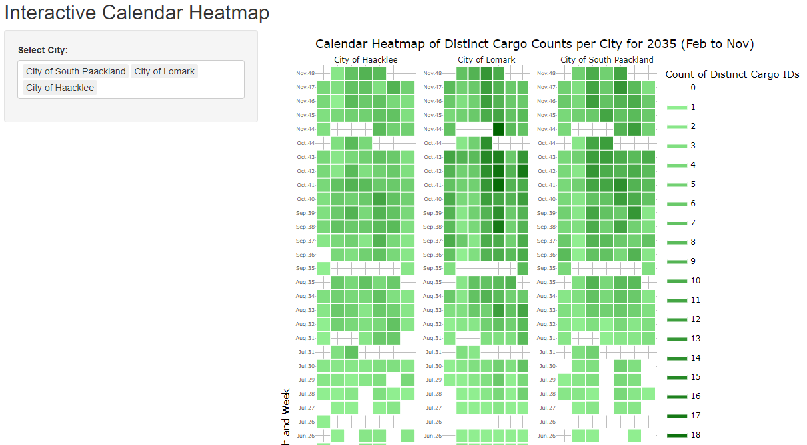
Purpose: Helps user see the seasonality of when cargo reaches the respective ports based on a calendar map
- Allows users to compare the cargo count across various port at specific dates.
- Include filter to allow users to zoom into selected dates of interest.
- Relabel of the y axis to make it reasonable instead of using count of weeks.
- To include reference to other data set (e.g., Count of vessels that is at the port, return the breakdown of fish species caught)
- Shiny Plot 6: Summary of the most frequent route taken by vessels.
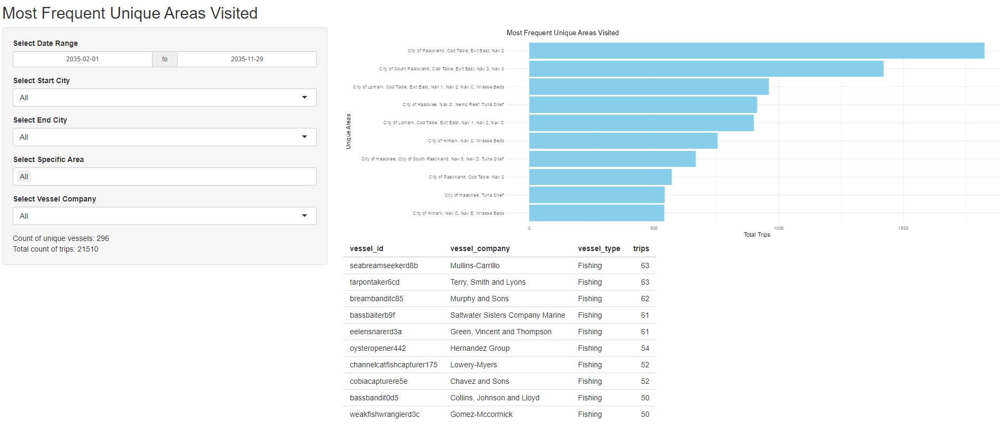
Purpose: Identifies the most travelled distinct routes by vessel.
- Allow users to select areas of interest that they are looking at and count the number of vessel for these top routes.
- Allow users to zoom into specific companies to identify the distinct locations visited.
- Highlight routes that have trespass illegal fishing route in “Red”
- Highlight routes that have visited fishing grounds and deep sea fishing navigation buoy in “Dark blue”
- Include reference to map to plot the geographical route taken on the map.
- Shiny Plot 7: Box Plot of Cargo Weight by Fish Species by Month
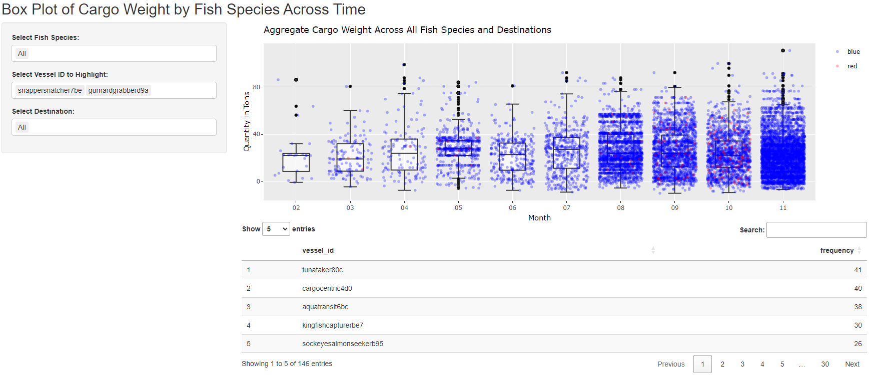
Purpose: Helps users to identify which vessel contributes to which cargo and the relative position within the month.
- Allows users to drill down into desired fish species
- Allows users to drill down into specific port of interest.
- Handling error where there is no record for that fish species for the given port, to properly return “No Available Record”.
- Introduce option for user to select color for highlighted vessels (Multiple) to contrast
- Shiny Plot 8: Median Dwell Time of vessel by Area
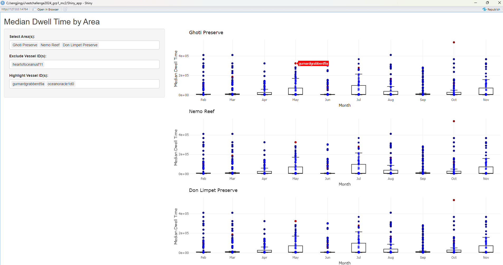
Purpose: Helps users identify the monthly median dwell time of the vessel at the respective area of interest.
- Allows users to identify area that they want to contrast to see the median dwell time spent
- Allows users to zoom into specific vessels of interest
- By hovering on the plot, users are able to see the name of the vessel id contributing to this median dwell time at the area of interest.
- Introduce filter to identify vessel by company
- Introduce option for user to select color for highlighted vessels (Multiple) to contrast
- Introduce reference line that maps the % increase / decrease for month on month median dwell time changes for all vessels & selected vessels.
- Introduce data table that returns the vessels and their details for those that are included in the “Highlighted Vessel ID”
- Shiny Plot 9: Route taken by vessels
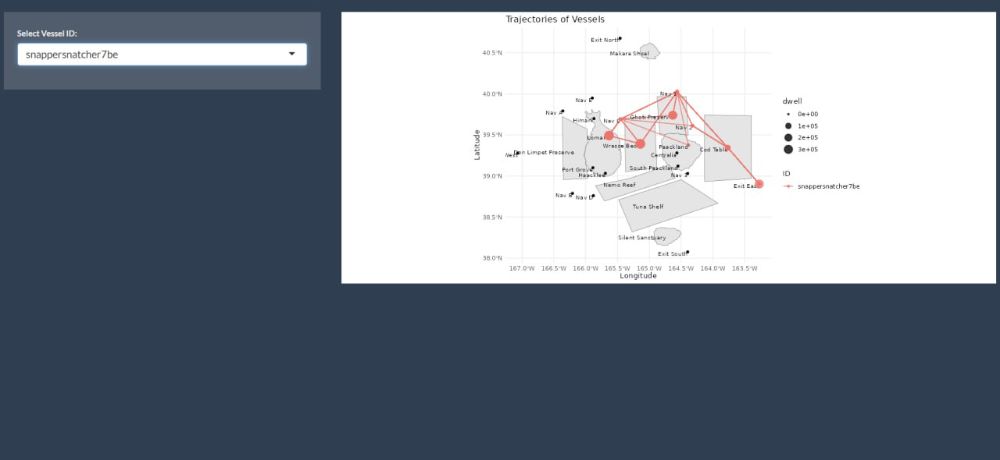
Purpose: Helps users zoom into the trajectory of vessels of interest to see the route taken and locations visited sequentially.
- Allows users to select vessel of interest to plot route taken.
- Allows users to select vessel of interest to plot dwell time at each area.
- Include selection of multiple vessels such that users are able to include up to 3 vessels to compare their trajectory.
- Update the input selection field such that it is filtered by “Vessel Name” for readability and also returns the associated “Vessel Company” for user’s reference.
- Include a filter on the time frame such that users are able to drill down into specific pocket of time of interest for temporal analysis. (e.g., Before SSEC was caught, immediately after, and months after SSEC was caught for any new suspicious trajectories).
- Shiny Plot 10: Comparison of dwell time by vessel company at the areas visited across time
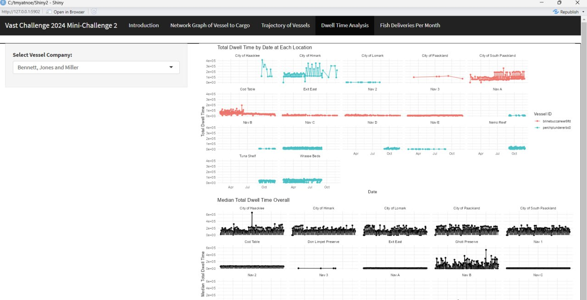
Purpose: Help users visualise the changes in dwell time spent by various vessel of the same company over the months at each location.
- Helps users identify which vessels in the company are active at which location in which months. (e.g., For Bernett, Jones and Millet company, only Perch Plunderer was active in Wrasse Bed, while Brine Bucaneer is active in Cod Table).
- Comparison with median dwell time helps users identify the cause of long dwell time at each area (e.g., High frequency of short visits or few visits but long stays).
- Return summary text on the most visited location for each vessel ID for the selected vessel company.
- Include filter option to allow users to filter and zoom into areas of interest for side-by-side comparison of key regions (e.g., Fishing grounds, Ecological Preserve) that vessel has entered into.
Discussion on how to combine the r Shiny Plots to address the sub-questions
Integrating all the charts above, the sketch below illustrates the possible navigation tabs in our Shiny application.
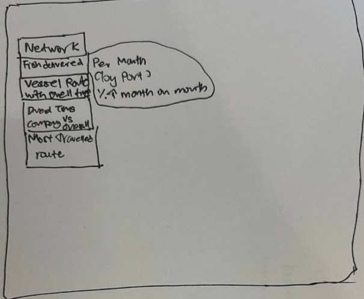
| Menu | Plots and layout |
|---|---|
| Q1a - Mapping of Cargo Delivered by Vessels |
|
| Q1b - Seasonality of Oceanus Catch |
|
| Q2 - Geographical mapping & dwell time |
|
| Q3 - Visual analytics workflow to identify other vessels engaging in behaviour similar to SSEC. | This will be based on qualitative assessment by exploring the outputs of interactive visualisations in Q1 & Q2 (e.g., vessel of similar trajectories, prolonged dwell time in Ghoti, Cod Table and Wrasse Beds) |
| Q4 - Changes in fishing behaviour after SSEC was caught and new suspicious behaviour. |
|
Action Items:
| Action items | Owner(s) | Deadline |
|---|---|---|
| Refine the r Shiny Plots and document a “User Guide” | Arya, Jing Yi, Myat | 24 June 2024 |
| Combine the r Shiny Plots and introduce links between various plots for coordinated linked view. | Arya, Jing Yi, Myat | 24 June 2024 |
| Investigate the possible suspicious behaviours with the r Shiny plots and document down findings in “Observations” | Arya, Jing Yi, Myat | 24 June 2024 |
| Summarise the methodology and findings in the poster. | Arya, Jing Yi, Myat | 24 June 2024 |
Agenda for Next Meeting:
Review the refined r Shiny plots & test for instance where there is any errors
Review the observations and potential finding for concurrence and reasonableness check.